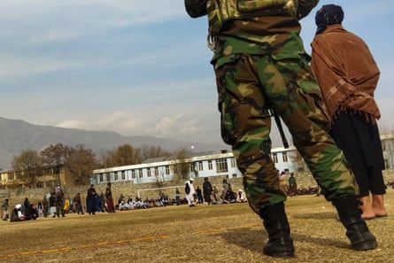
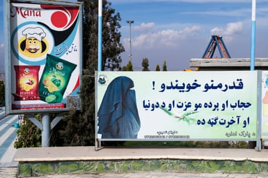
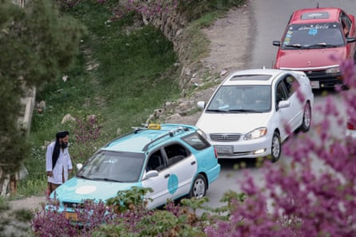

Three Afghan women who were brutally flogged in public by the Taliban after being accused of “moral crimes” have bravely spoken out about the cruelty they endured.
More than 1,000 people – at least 200 of whom were women – are now known to have been humiliated in public floggings since the Taliban’s return to power in 2021, according to court records and media reports . The true numbers are probably much higher.
Among those who were whipped are women accused of “moral crimes”, which include leaving home without a close male relative to act as a mahram (guardian) , or being seen speaking to unrelated men.
All three women who spoke to the Guardian and Zan Times , an Afghan news agency, said they had been forced to confess to alleged moral crimes before they were punished.
Security personnel keep watch before the flogging of 27 people in front of a crowd at a football stadium in Charikar, Parwan province, in December 2022.Photograph: AFP/Getty Images
Deeba: ‘They called me a prostitute’
With her husband working in Iran, 38-year-old Deeba* is the sole provider for her seven children. As a tailor, she sews men’s clothes in her home and goes out alone to deliver them.
In the past two years, she has been arrested twice by the Taliban’s “morality police”. The first time was when she was renting a sewing machine from a man she was not related to. She says she was beaten, called a “prostitute” and spent four nights in jail.
The second arrest happened three months later when she was sitting in a cafe charging her phone. She was wearing a long coat and a large shawl, but the Taliban “vice and virtue” enforcers still questioned her.
“They said, ‘Why are you unveiled? Why are you alone without a mahram?’ I told them, ‘The earthquake [Afghanistan was hit by several in 2023 ] has made it hard to go home. There’s no electricity. That’s why I came here to charge my phone and grab a sandwich.’”
Her answer provoked the Taliban even further. “They kicked the sandwich shop owner out of his own place and slapped him, shouting, ‘Why did you let this woman into your store? What relationship do you have with her?’ When I saw them treating him like that, I argued with them.”
Two days later, she was arrested and taken into custody by the Taliban and accused of insulting the police, as well as being a woman without a mahram outside her home. She was held in prison for 20 days.
“There were 15 of us in one cell. Four beds; the rest slept on the floor. They weren’t giving us food. The blankets were filthy.
“I asked for my phone to call home because my daughter was sick and didn’t know I’d been arrested, but the Taliban refused. I screamed, begged. But instead they threw me into a solitary cell.”
Deeba was brought before a Taliban court. No lawyer represented her. The judge convicted her of appearing without a male guardian and insulting religious scholars. She was sentenced to 25 lashes.
“They took me to a public place, covered my head, and whipped me in front of everyone,” she says. Deeba says she was then detained for another two days to ensure some of her wounds healed.
Since returning home, Deeba says she has struggled with the humiliation of the public flogging and is on medication to cope with her trauma.
“When I was released, even my closest friends started treating me differently. They called me names and spoke about me with such disgust because they’d been told lies about what happened.
“It was just so hard. Unbearably hard. Can anyone understand what it’s like to be slapped in front of a crowd, punched in front of people, covered up and flogged in public?”
A poster in Kabul reads: ‘Dear sisters! Hijab and veil are your dignity and are in your benefit in this world and in the hereafter’.Photograph: Wakil Kohsar/AFP/Getty Images
Sahar: ‘If I didn’t obey, I’d be tortured’
Sahar*, 22, was very sick last year. Her father worked in Iran and her mother ran a carpet-weaving workshop in a village in western Afghanistan . There was no one to take her to the clinic where two of her uncles were working. Her mother called her male cousin to drive her.
The Taliban stopped their vehicle just before reaching the clinic and asked about their relationship.
“When we said we are cousins but we weren’t married, they became aggressive. They beat my cousin, smashed our phones, and forced me to hide on the floor of the Taliban truck as they drove me to their station,” says Sahar.
She says she was then taken to a detention centre. “I was terrified, crying, and I couldn’t breathe.
“I told them I was sick and asked for some medicine. That’s when they slapped me and kicked me several times. One of them said, ‘If you raise your voice again, we’ll kill you and your cousin.’”
Sahar says she was interrogated by a veiled woman. “She asked who my cousin was; whether I was a virgin; whether we had a relationship. I said no. She warned me that I had to confess and if I didn’t obey, I’d be tortured.”
The next day, Sahar and her cousin were brought before a Taliban court, where she says she was forced to falsely claim she had a relationship with her cousin. She had no lawyer. Despite the presence of relatives who testified that they were family, the Taliban refused to recognise their relationship as mahram and permissible.
“They made me confess, in front of my mother, my uncles, that I had done something wrong. I didn’t want to say it. But they hit me, threatened my cousin. I was terrified,” she says.
Sahar says she was sentenced to 30 lashes and her cousin to 70. “They used loudspeakers to announce our punishment. My little sister was there. She used to say I was her role model. I saw her crying in the crowd. That broke me.”
After returning home, Sahar says she was forced to leave her village. “After this happened, people’s view of us changed completely. Even if 50 people didn’t believe the accusation, 100 others did. That forced us to leave our home and move to the city.”
The Taliban check vehicles visiting Qargha Lake near Kabul – women are forbidden from enjoying the popular picnic spot.Photograph: Samiullah Popal/EPA
Karima: ‘They tied me down and stepped on me’
A similar story is told by 18-year-old Karima* in another western province. In 2023, aged 16, she says she was travelling with her male cousin to buy sewing supplies for her mother when the Taliban stopped them.
“We were stopped on the road. The Taliban asked for our IDs. I told them he was my cousin, but they said, ‘That’s not a valid mahram. You don’t have the right to be with him.’ They arrested us on the spot.”
She spent two months in prison and suffered panic attacks and hallucinations. “I blacked out,” Karima says. “When I woke up, my wrists were handcuffed and bleeding, and another prisoner told me they had tied me down and stepped on me.”
Karima says she and her cousin were flogged in the main square of the city where they lived. She was given 39 lashes and her cousin received 50. They were then taken back to prison.
“They kept us for another week. They said we couldn’t leave until the wounds healed. They didn’t want anyone to see what they had done.”
When she was released, Taliban officials told her she was banned from leaving the country: “‘You’re being watched,’ they told me, ‘You’re not allowed to go abroad.’”
However, like Sahar and Deeba, the humiliation of people staring at her and whispering about her when she went back to her home village forced her to move to a different city in Afghanistan.
* Names have been changed to protect their identities